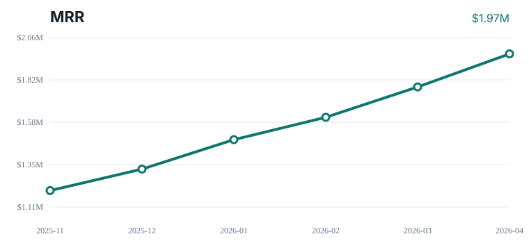
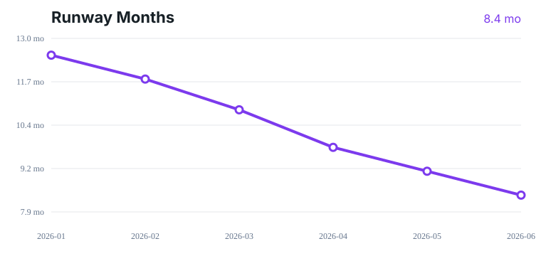
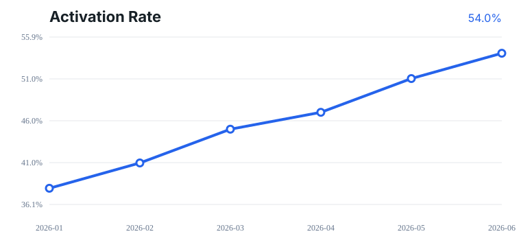
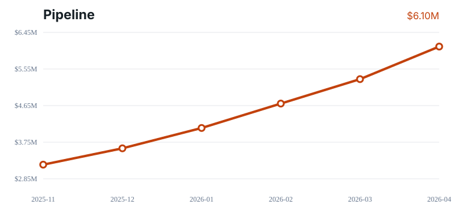

MRR
$1.97M
MRR Growth
10.4%
Runway
8.4 mo
Health Score
81/100
Executive Summary
2026-04 was a stronger growth month, with MRR at $1.97M and month-over-month growth of 10.4%. Activation improved to 54.0% and churn moved to 3.2%, but runway is now 8.4 months, so the board discussion should stay focused on growth quality, burn discipline, and which pipeline segments deserve founder time.




What Changed
- MRR reached $1.97M, up 10.4% month over month.
- Pipeline reached $6.10M, up 15.1% month over month.
- Activation improved by 3.0 points to 54.0%.
- Churn improved by 0.4 points to 3.2%.
- CAC decreased 3.7% to $16K.
- Health score is 81/100 based on growth, churn, activation, CAC, runway, and pipeline coverage.
Risks
- Runway is below 9 months at 8.4 months, which compresses fundraising options.
Decisions Needed
- Decide whether to reduce discretionary burn or start fundraising prep earlier.
- Decide whether activation improvement is the top product/GTM priority for the next month.
- Decide which pipeline segments deserve founder time before adding more top-of-funnel volume.
- Decide whether CAC improvement is strong enough to increase spend in the best-performing channel.
Likely Board Questions
- Which customer segment is producing the highest-quality MRR growth?
- Is activation improvement durable or driven by a one-time onboarding push?
- What burn level gives us the best fundraising position three months from now?
- Which pipeline deals need founder involvement this month?
Investor Update Draft
Hi everyone, Quick monthly update for 2026-04. MRR reached $1.97M, up 10.4% month over month. Activation improved to 54.0%, pipeline reached $6.10M, and CAC moved -3.7% versus last month. What improved: - MRR reached $1.97M, up 10.4% month over month. - Pipeline reached $6.10M, up 15.1% month over month. - Activation improved by 3.0 points to 54.0%. - Churn improved by 0.4 points to 3.2%. What we are watching: - Runway is below 9 months at 8.4 months, which compresses fundraising options. Where help would be useful: - Warm intros to AI SaaS buyers who care about support, success, or internal knowledge workflows. - Feedback on whether we should prioritize enterprise expansion or faster mid-market acquisition this month. Thanks, [Founder]